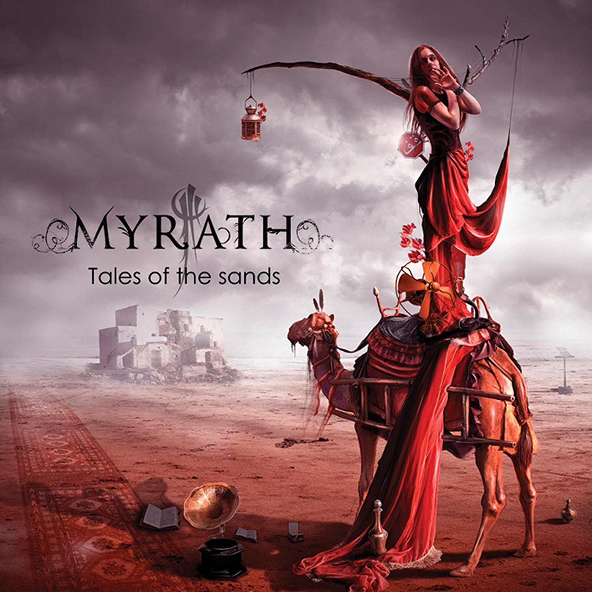

📅 16 Octobre 2026 - 20:00
📍 Rocher de Palmer - Cenon
Écouter sur


Myrath est un groupe franco-tunisien de metal progressif fondé en 2001 à Ezzahra, en Tunisie. Portés par la voix exceptionnelle de Zaher Zorgati, capable de passer de puissants cris metal à de sensuels chants orientaux, ils ont forgé un son unique qu'ils appellent eux-mêmes le Blazing Desert Metal — un mélange envoûtant de riffs heavy, d'orchestrations cinématographiques et de mélodies issues des traditions musicales africaines, indiennes et européennes. Des albums comme Legacy ou Shehili leur ont valu une reconnaissance internationale, et en 2022 ils ont fait l'histoire en se produisant lors de la Coupe du Monde FIFA au Qatar. Sur scène, Myrath offre un spectacle d'une richesse rare, entre énergie brute et dépaysement total — une expérience à ne manquer sous aucun prétexte.